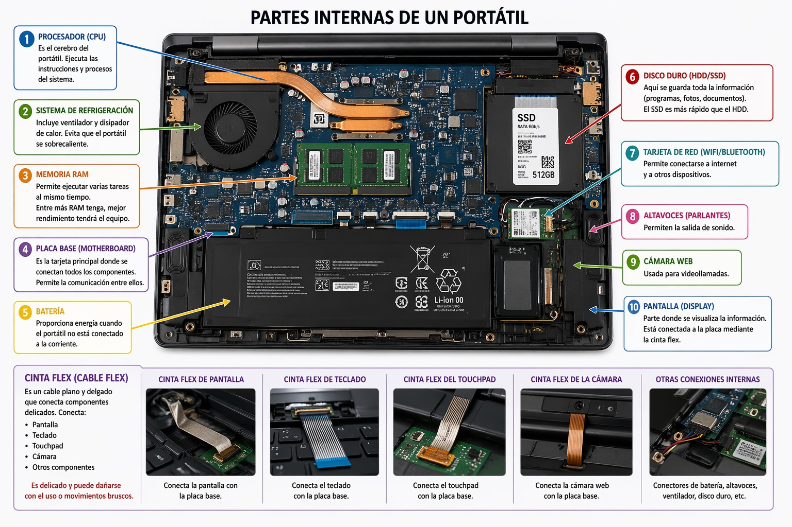

Descripción: En esta primera sesión se presentó la estructura del curso, los objetivos y la importancia de la formación en TIK dentro del SENA. Se habló de cómo la tecnología transforma la educación, se explicó el rol del estudiante como protagonista de su aprendizaje y se dio un vistazo a las herramientas digitales que se usarán. Fue un espacio de motivación y de apertura hacia el mundo de la programación.
Clase 2: Componentes básicos dentro de un portátil
Instructor: Ivone
Horario: Jueves 23/04/2026 12:30 p.m.
Descripción: Se realizó un ejercicio práctico de desarmar un portátil. Se identificaron piezas como batería, tarjeta madre, ventiladores, memoria RAM y disco duro. Además de reconocer cada componente, se explicó su función y cómo interactúan entre sí. Esta práctica permitió comprender la base física de la informática y la importancia del mantenimiento preventivo.

Clase 3: Conocer la programación
Instructor: Ivone
Horario: Martes 28/04/2026 12:30 p.m.
Descripción: Se introdujo el concepto de programación y su lógica. Se explicó cómo los lenguajes de programación permiten transformar ideas en soluciones digitales. Se escribieron las primeras líneas en HTML, entendiendo etiquetas, estructura básica y cómo se construye una página web. Fue el primer paso hacia el desarrollo web.
Clase 4: Crear página web
Instructor: Ivone
Horario: Jueves 30/04/2026 12:30 p.m.
Descripción: Se profundizó en HTML, agregando más etiquetas y organizando el contenido en secciones. Se habló de la importancia de la coherencia y la jerarquía visual. Se planteó cómo una página web no solo muestra información, sino que debe tener propósito y estructura clara. Aquí nació el proyecto académico personal.
Clase 5: Página SENA TIK
Instructor: Ivone
Horario: Martes 05/05/2026 12:30 p.m.
Descripción: Se definió el proyecto principal: un portal académico para registrar cada clase. Se discutió la idea de documentar sesiones con fecha, instructor y descripción. Se resaltó la importancia de la identidad institucional (logo, colores) y se planteó que este portal será el núcleo del aprendizaje, mejorado día a día con estilos y funciones.
Clase 6: Investigación de cosas básicas
Instructor: Ivone
Horario: Martes 12/05/2026 12:30 p.m.
Descripción: Se investigaron plataformas educativas como Moodle y Microsoft Teams. Se identificaron problemas comunes: falta de capacitación, desorganización y baja participación. Se propusieron estrategias de mejora: comunicación constante, uso de herramientas interactivas y capacitación digital. La conclusión fue que la educación virtual depende más del uso adecuado de la tecnología que de la tecnología misma.
Clase 7: Pausa activa
Instructor: Ivone
Horario: Jueves 14/05/2026 12:30 p.m.
Descripción: Se vio una película toda la jornada como actividad de pausa activa.
Clase 8: fichas tecnicas
Instructor: Ivone
Horario: Martes 19/05/2026 12:30 p.m.
Descripción: Una ficha técnica de un computador portátil es un documento breve que reúne en un solo lugar las especificaciones más importantes del equipo, como la marca y modelo, el procesador con su velocidad y núcleos, la cantidad de memoria RAM instalada y máxima soportada, el tipo y capacidad de almacenamiento, las características de la pantalla como tamaño y resolución, la tarjeta gráfica si es integrada o dedicada, la conectividad con puertos y tecnologías inalámbricas, el sistema operativo instalado, la capacidad de la batería y su duración estimada, además de datos de garantía y observaciones de mantenimiento; todo esto permite comparar equipos, planear reparaciones y tener un registro técnico confiable..
Clase 9: Principales productos del trabajo del egresado en tecnología
Instructor: Ivone
Horario: Jueves 21/05/2026 12:30 p.m.
Descripción: El egresado en el área tecnológica desarrolla y entrega productos clave que garantizan el buen funcionamiento de los sistemas de información y equipos de cómputo. Entre ellos se incluyen el inventario de activos tecnológicos, la revisión y corrección de equipos, la puesta en operación de computadores, la elaboración de reportes de diagnóstico, las fichas técnicas de equipos y redes, las actas de aprobación de mantenimiento, la documentación técnica y normativa y el respaldo físico o en la nube de la información institucional. Estos productos reflejan la responsabilidad profesional del egresado y su aporte a la gestión tecnológica.
Clase 10: Podcast
Instructor: Ivone
Horario: Martes 26/05/2026 12:30 p.m.
Descripción: Se empezó a escribir el guion para un podcast enfocado en temas relacionados con la informática y la tecnología. El contenido abordará aspectos fundamentales como el software, el hardware, los sistemas operativos y el mantenimiento de computadores, explicando sus funciones, características e importancia en el uso cotidiano de los equipos informáticos.
Durante la elaboración del guion se organizaron los temas principales, definiendo una estructura que permita presentar la información de manera clara, dinámica y comprensible para la audiencia. Además, se planteó incluir ejemplos prácticos y situaciones reales que faciliten la comprensión de los conceptos técnicos.
El objetivo del podcast es brindar conocimientos básicos sobre el funcionamiento de los computadores, promover buenas prácticas de mantenimiento y ayudar a los oyentes a comprender la relación entre los componentes físicos y los programas que permiten el funcionamiento de los sistemas informáticos.
Clase 11: Entrega de trabajos
Instructor: Ivone
Horario: Jueves 28/05/2026 12:30 p.m.
Descripción: Se entregaron los trabajos que la instructora había asignado durante las tres últimas clases del SENA y que aún estaban pendientes de finalización. Entre las actividades entregadas se encontraba la ficha técnica del computador, en la cual se registraron las características y especificaciones del equipo, así como la recopilación de datos importantes relacionados con sus componentes de hardware y software.
Además, se revisó que toda la información estuviera completa y organizada correctamente antes de su entrega. Esta actividad permitió reforzar los conocimientos sobre la identificación de las partes del computador, el análisis de sus características técnicas y la importancia de llevar un registro adecuado de la información de los equipos informáticos.
Clase 12: Comprobacion de datos
Instructor: Ivone
Horario: Martes 02/06/2026 12:30 p.m.
Descripción: Hoy en la Clase 12 del SENA se exigió a los aprendices enviar los datos personales faltantes, como identificación y registros académicos, con el fin de garantizar que toda la información esté completa y actualizada para el trabajo final. Esta actividad fue fundamental porque asegura la validez de los procesos institucionales y permite que cada estudiante esté correctamente registrado en el sistema. Además, se trabajó en la elaboración de la ficha técnica de tres computadores, donde se documentaron aspectos como marca, modelo, procesador, memoria RAM, capacidad de almacenamiento, sistema operativo y estado físico de los equipos. Este ejercicio práctico permitió aplicar los conocimientos adquiridos en clases anteriores sobre documentación técnica y reforzó la importancia de registrar información clara y estandarizada. La jornada también sirvió para reflexionar sobre la responsabilidad en el manejo de datos y la necesidad de precisión en cada registro, ya que cualquier error puede afectar el desarrollo del proyecto final. En conclusión, la Clase 12 se convirtió en un espacio clave de validación de información y práctica técnica, aportando directamente a la preparación del trabajo final del SENA y fortaleciendo las competencias de los aprendices en gestión de datos y documentación de equipos.